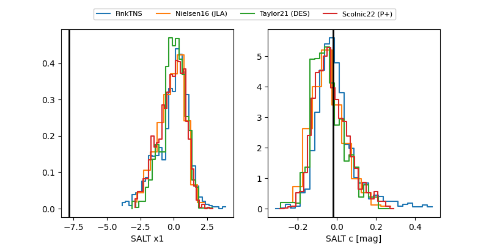

ZTF25achjjtv
Target ZTF25achjjtv at 2025-12-20 14:29
Aliases and brokers:
FINK: fink-portal.org/ZTF25achjjtv
Lasair: lasair-ztf.lsst.ac.uk/objects/ZTF25achjjtv
ALeRCE: alerce.online/object/ZTF25achjjtv
alt names
ZTF25achjjtv (ztf,fink_ztf)
Coordinates:
equatorial (ra, dec) = 170.6263,+48.43277
equatorial (HMS+DMS) = 11:22:30.31,+48:25:57.96
galactic (l, b) = (155.9840,+62.59303)
Flags:
Photometry:
last ztfg=20.14, ztfr=19.98
3 ztfg, 1 ztfr detections
Lightcurve

Visibility


Additional plots
